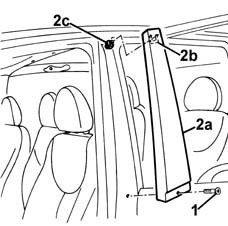
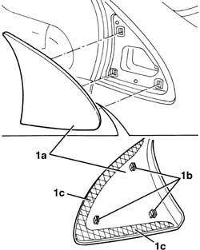
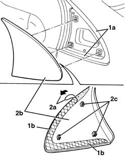

7055A62 MOULDING ON ONE PILLAR, L/H OR R/H - R+R
- Path
- Procedures > 70 FITTINGS > 7055 MOULDINGS ON PROTECTIONS > 7055A EXTERIOR MOULDINGS > 7055A62 MOULDING ON ONE PILLAR, L/H OR R/H - R+R
- Kind
- repair procedure (removal / refitting; the operation number is the code)
- Applies to
- all engines; all production periods
- Interactive page
- https://sloeber94.github.io/elrnDB-fMltpl/en/#/2892261
Applies to: all engines; production: fino a 05/99, da 09/03, da 06/99 a 03/02, da 04/02 a 08/03, fino a 05/04
 Removing
Removing
 Refitting
Refitting1. Open the doors and undo the bolt.
2. Remove the moulding (2a), moving it downwards to disengage its retainer (2b) from the nut (2c).

Applies to: all engines; production: fino a 05/99, da 09/03, da 06/99 a 03/02, da 04/02 a 08/03, fino a 05/04
Refitting
RemovingCheck that the moulding is undamaged.
Fit the moulding retainer, engaging it on the nut.
Tighten the bolt and shut the doors.
Applies to: all engines; production: da 06/04
Removing
RefittingCENTRE PILLAR:
1. Open the doors and undo the bolt.
2. Remove the moulding (2a) moving it downwards to release the retainer (2b) from the nut (2c).
Applies to: all engines; production: da 06/04
FRONT PILLAR:
1. Open the front door and, using a plastic blade, remove the moulding (1a) releasing the retainers (1b) and the adhesive tape (1c).

Applies to: all engines; production: da 06/04
Refitting
RemovingFRONT PILLAR
Check that the new moulding is not damaged.
1. Clean the area (1a) of the bodyshell involved in the refitting of the adhesive tape (1b) for the moulding, removing the residual adhesive, then degrease using heptane.
2. Remove the protective film (2a) for the adhesive tape than place the moulding (2b) in position attaching the retainers (2c). Press on top of the adhesive (1b) to stick it to the bodyshell.

Applies to: all engines; production: da 06/04
CENTRE PILLAR
Check that the moulding is not damaged.
Place the moulding on the reatiner nut and attach it.
Tighten the bolt and close the doors.